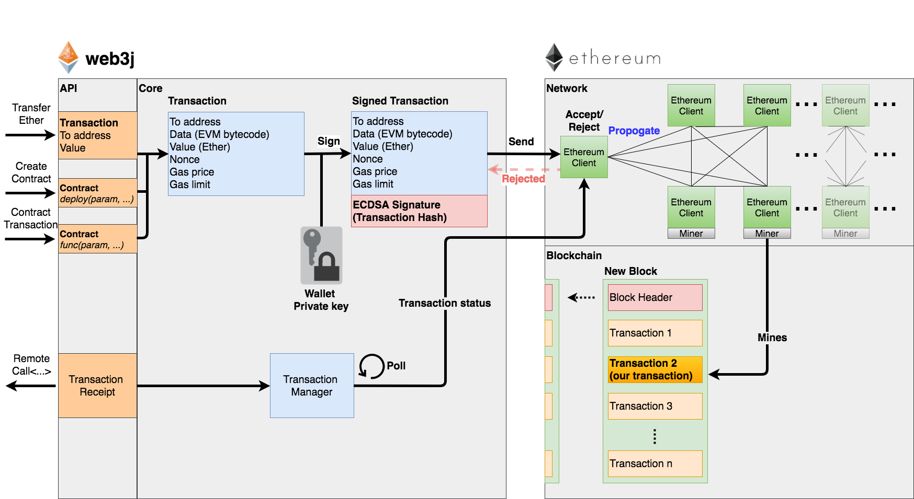

Transactions¶
Broadly speaking there are three types transactions supported on Ethereum:
- Transfer of Ether from one party to another
- Creation of a smart contract
- Transacting with a smart contract
To undertake any of these transactions, it is necessary to have Ether (the fuel of the Ethereum blockchain) residing in the Ethereum account which the transactions are taking place from. This is to pay for the Gas costs, which is the transaction execution cost for the Ethereum client that performs the transaction on your behalf, comitting the result to the Ethereum blockchain. Instructions for obtaining Ether are described below in Obtaining Ether
Additionally, it is possible to query the state of a smart contract, this is described in Querying the state of a smart contract

Obtaining Ether¶
To obtain Ether you have two options:
- Mine it yourself
- Obtain Ether from another party
Mining it yourself in a private environment, or the public test environment (testnet) is very straight forwards. However, in the main live environment (mainnet) it requires significant dedicated GPU time which is not likely to be feasible unless you already have a gaming PC with multiple dedicated GPUs. If you wish to use a private environment, there is some guidance on the Homestead documentation.
To purchase Ether you will need to go via an exchange. As different regions have different exchanges, you will need to research the best location for this yourself. The Homestead documentation contains a number of exchanges which is a good place to start.
Ethereum testnets¶
There are a number of dedicated test networks in Ethereum, which are supported by various clients.
- Rinkeby (Geth only)
- Kovan (Parity only)
- Ropsten (Geth and Parity)
For development, its recommended you use the Rinkeby or Kovan test networks. This is because they use a Proof of Authority (PoA) consensus mechanism, ensuring transactions and blocks are created in a consistent and timely manner. The Ropsten testnet, although closest to the Mainnet as it uses Proof of Work (PoW) consensus, has been subject to attacks in the past and tends to be more problematic for developers.
You can request Ether for the Rinkeby testnet via the Rinkeby Crypto Faucet, available at https://www.rinkeby.io/.
Details of how to request Ether for the Kovan testnet are available here.
If you need some Ether on the Ropsten testnet to get started, please post a message with your wallet address to the web3j Gitter channel and you will be sent some.
Mining on testnet/private blockchains¶
In the Ethereum test environment (testnet), the mining difficulty is set lower then the main environment (mainnet). This means that you can mine new Ether with a regular CPU, such as your laptop. What you'll need to do is run an Ethereum client such as Geth or Parity to start building up reserves. Further instructions are available on the respective sites.
Geth
https://github.com/ethereum/go-ethereum/wiki/Mining
Parity
https://github.com/paritytech/parity/wiki/Mining
Once you have mined some Ether, you can start transacting with the blockchain.
However, as mentioned above it's simpler to use the Kovan or Rinkeby test networks.
Gas¶
When a transaction takes place in Ethereum, a transaction cost must be paid to the client that executes the transaction on your behalf, committing the output of this transaction to the Ethereum blockchain.
This cost is measure in gas, where gas is the number of instructions used to execute a transaction in the Ethereum Virtual Machine. Please refer to the Homestead documentation for further information.
What this means for you when working with Ethereum clients is that there are two parameters which are used to dictate how much Ether you wish to spend in order for a tranaction to complete:
Gas price
This is the amount you are prepared in Ether per unit of gas. web3j uses a default price of 22,000,000,000 Wei (22 x 10^-8^ Ether). This is defined in ManagedTransaction.
Gas limit
This is the total amount of gas you are happy to spend on the transaction execution. There is an upper limit of how large a single transaction can be in an Ethereum block which restricts this value typically to less then 6,700,000. The current gas limit is visible at https://ethstats.net/.
These parameters taken together dictate the maximum amount of Ether you are willing to spend on transaction costs. i.e. you can spend no more then gas price * gas limit. The gas price can also affect how quickly a transaction takes place depending on what other transactions are available with a more profitable gas price for miners.
You may need to adjust these parameters to ensure that transactions take place in a timely manner.
Transaction mechanisms¶
When you have a valid account created with some Ether, there are two mechanisms you can use to transact with Ethereum.
Both mechanisms are supported via web3j.
Transaction signing via an Ethereum client¶
In order to transact via an Ethereum client, you first need to ensure that the client you're transacting with knows about your wallet address. You are best off running your own Ethereum client such as Geth/Parity in order to do this. Once you have a client running, you can create a wallet via:
- The GethWiki contains a good run down of the different mechanisms Geth supports such as importing private key files, and creating a new account via it's console
- Alternatively you can use a JSON-RPC admin command for your client, such as personal_newAccount for Parity or Geth
With your wallet file created, you can unlock your account via web3j by first of all creating an instance of web3j that supports Parity/Geth admin commands:
Admin web3j = Admin.build(new HttpService());
Then you can unlock the account, and providing this was successful, send a transaction:
PersonalUnlockAccount personalUnlockAccount = web3j.personalUnlockAccount("0x000...", "a password").send(); if (personalUnlockAccount.accountUnlocked()) { // send a transaction }
Transactions for sending in this manner should be created via EthSendTransaction, with the Transaction type:
Transaction transaction = Transaction.createContractTransaction( <from address>, <nonce>, BigInteger.valueOf(<gas price>), // we use default gas limit "0x...<smart contract code to execute>" ); org.web3j.protocol.core.methods.response.EthSendTransaction transactionResponse = parity.ethSendTransaction(ethSendTransaction) .send(); String transactionHash = transactionResponse.getTransactionHash(); // poll for transaction response via org.web3j.protocol.Web3j.ethGetTransactionReceipt(<txHash>)
Where the <nonce> value is obtained as per below
Please refer to the integration test DeployContractIT and its superclass Scenario for further details of this transaction workflow.
Further details of working with the different admin commands supported by web3j are available in the section Managment APIs.
Offline transaction signing¶
If you'd prefer not to manage your own Ethereum client, or do not want to provide wallet details such as your password to an Ethereum client, then offline transaction signing is the way to go.
Offline transaction signing allows you to sign a transaction using your Ethereum Ethereum wallet within web3j, allowing you to have complete control over your private credentials. A transaction created offline can then be sent to any Ethereum client on the network, which will propagate the transaction out to other nodes, provided it is a valid transaction.
You can also perform out of process transaction signing if required. This can be achieved by overriding the sign method in ECKeyPair.
Creating and working with wallet files¶
In order to sign transactions offline, you need to have either your Ethereum wallet file or the public and private keys associated with an Ethereum wallet/account.
web3j is able to both generate a new secure Ethereum wallet file for you, or work with an existing wallet file.
To create a new wallet file:
String fileName = WalletUtils.generateNewWalletFile( "your password", new File("/path/to/destination"));
To load the credentials from a wallet file:
Credentials credentials = WalletUtils.loadCredentials( "your password", "/path/to/walletfile");
These credentials are then used to sign transactions.
Please refer to the Web3 Secret Storage Definition for the full wallet file specification.
Signing transactions¶
Transactions to be used in an offline signing capacity, should use the RawTransaction type for this purpose. The RawTransaction is similar to the previously mentioned Transaction type, however it does not require a from address, as this can be inferred from the signature.
In order to create and sign a raw transaction, the sequence of events is as follows:
- Identify the next available nonce for the sender account
- Create the RawTransaction object
- Encode the RawTransaction object using Recursive Length Prefix encoding
- Sign the RawTransaction object
- Send the RawTransaction object to a node for processing
The nonce is an increasing numeric value which is used to uniquely identify transactions. A nonce can only be used once and until a transaction is mined, it is possible to send multiple versions of a transaction with the same nonce, however, once mined, any subsequent submissions will be rejected.
Once you have obtained the next available nonce, the value can then be used to create your transaction object:
RawTransaction rawTransaction = RawTransaction.createEtherTransaction( nonce, <gas price>, <gas limit>, <toAddress>, <value>);
The transaction can then be signed and encoded:
byte[] signedMessage = TransactionEncoder.signMessage(rawTransaction, <credentials>); String hexValue = Numeric.toHexString(signedMessage);
Where the credentials are those loaded as per Creating and working with wallet files
The transaction is then sent using eth_sendRawTransaction:
EthSendTransaction ethSendTransaction = web3j.ethSendRawTransaction(hexValue).sendAsync().get(); String transactionHash = ethSendTransaction.getTransactionHash(); // poll for transaction response via org.web3j.protocol.Web3j.ethGetTransactionReceipt(<txHash>)
Please refer to the integration test CreateRawTransactionIT for a full example of creating and sending a raw transaction.
The transaction nonce¶
The nonce is an increasing numeric value which is used to uniquely identify transactions. A nonce can only be used once and until a transaction is mined, it is possible to send multiple versions of a transaction with the same nonce, however, once mined, any subsequent submissions will be rejected.
You can obtain the next available nonce via the eth_getTransactionCount method:
EthGetTransactionCount ethGetTransactionCount = web3j.ethGetTransactionCount( address, DefaultBlockParameterName.LATEST).sendAsync().get(); BigInteger nonce = ethGetTransactionCount.getTransactionCount();
The nonce can then be used to create your transaction object:
RawTransaction rawTransaction = RawTransaction.createEtherTransaction( nonce, <gas price>, <gas limit>, <toAddress>, <value>);
Transaction types¶
The different types of transaction in web3j work with both Transaction and RawTransaction objects. The key difference is that Transaction objects must always have a from address, so that the Ethereum client which processes the eth_sendTransaction request know which wallet to use in order to sign and send the transaction on the message senders behalf. As mentioned above, this is not necessary for raw transactions which are signed offline.
The subsequent sections outline the key transaction attributes required for the different transaction types. The following attributes remain constant for all:
- Gas price
- Gas limit
- Nonce
- From
Transaction and RawTransaction objects are used interchangeably in all of the subsequent examples.
Transfer of Ether from one party to another¶
The sending of Ether between two parties requires a minimal number of details of the transaction object:
to
the destination wallet address
value
the amount of Ether you wish to send to the destination address
BigInteger value = Convert.toWei("1.0", Convert.Unit.ETHER).toBigInteger(); RawTransaction rawTransaction = RawTransaction.createEtherTransaction( <nonce>, <gas price>, <gas limit>, <toAddress>, value); // send...
However, it is recommended that you use the Transfer class for sending Ether, which takes care of the nonce management and polling for a response for you:
Web3j web3 = Web3j.build(new HttpService()); // defaults to http://localhost:8545/ Credentials credentials = WalletUtils.loadCredentials("password", "/path/to/walletfile"); TransactionReceipt transactionReceipt = Transfer.sendFunds( web3, credentials, "0x<address>|<ensName>", BigDecimal.valueOf(1.0), Convert.Unit.ETHER).send();
Recommended approach for working with smart contracts¶
When working with smart contract wrappers as outlined below, you will have to perform all of the conversions from Solidity to native Java types manually. It is far more effective to use web3j's Solidity smart contract wrappers which take care of all code generation and this conversion for you.
Creation of a smart contract¶
To deploy a new smart contract, the following attributes will need to be provided
value
the amount of Ether you wish to deposit in the smart contract (assumes zero if not provided)
data
the hex formatted, compiled smart contract creation code
// using a raw transaction RawTransaction rawTransaction = RawTransaction.createContractTransaction( <nonce>, <gasPrice>, <gasLimit>, <value>, "0x <compiled smart contract code>"); // send... // get contract address EthGetTransactionReceipt transactionReceipt = web3j.ethGetTransactionReceipt(transactionHash).send(); if (transactionReceipt.getTransactionReceipt.isPresent()) { String contractAddress = transactionReceipt.get().getContractAddress(); } else { // try again }
If the smart contract contains a constructor, the associated constructor field values must be encoded and appended to the compiled smart contract code:
String encodedConstructor = FunctionEncoder.encodeConstructor(Arrays.asList(new Type(value), ...)); // using a regular transaction Transaction transaction = Transaction.createContractTransaction( <fromAddress>, <nonce>, <gasPrice>, <gasLimit>, <value>, "0x <compiled smart contract code>" + encodedConstructor); // send...
Transacting with a smart contract¶
To transact with an existing smart contract, the following attributes will need to be provided:
to
the smart contract address
value
the amount of Ether you wish to deposit in the smart contract (if the smart contract accepts ether)
data
the encoded function selector and parameter arguments
web3j takes care of the function encoding for you, for further details on the implementation refer to the Application Binary Interface section.
Function function = new Function<>( "functionName", // function we're calling Arrays.asList(new Type(value), ...), // Parameters to pass as Solidity Types Arrays.asList(new TypeReference<Type>() {}, ...)); String encodedFunction = FunctionEncoder.encode(function) Transaction transaction = Transaction.createFunctionCallTransaction( <from>, <gasPrice>, <gasLimit>, contractAddress, <funds>, encodedFunction); org.web3j.protocol.core.methods.response.EthSendTransaction transactionResponse = web3j.ethSendTransaction(transaction).sendAsync().get(); String transactionHash = transactionResponse.getTransactionHash(); // wait for response using EthGetTransactionReceipt...
It is not possible to return values from transactional functional calls, regardless of the return type of the message signature. However, it is possible to capture values returned by functions using filters. Please refer to the Filters and Events section for details.
Querying the state of a smart contract¶
This functionality is facilitated by the eth_call JSON-RPC call.
eth_call allows you to call a method on a smart contract to query a value. There is no transaction cost associated with this function, this is because it does not change the state of any smart contract method's called, it simply returns the value from them:
Function function = new Function<>( "functionName", Arrays.asList(new Type(value)), // Solidity Types in smart contract functions Arrays.asList(new TypeReference<Type>() {}, ...)); String encodedFunction = FunctionEncoder.encode(function) org.web3j.protocol.core.methods.response.EthCall response = web3j.ethCall( Transaction.createEthCallTransaction(<from>, contractAddress, encodedFunction), DefaultBlockParameterName.LATEST) .sendAsync().get(); List<Type> someTypes = FunctionReturnDecoder.decode( response.getValue(), function.getOutputParameters());
Note: If an invalid function call is made, or a null result is obtained, the return value will be an instance of Collections.emptyList()